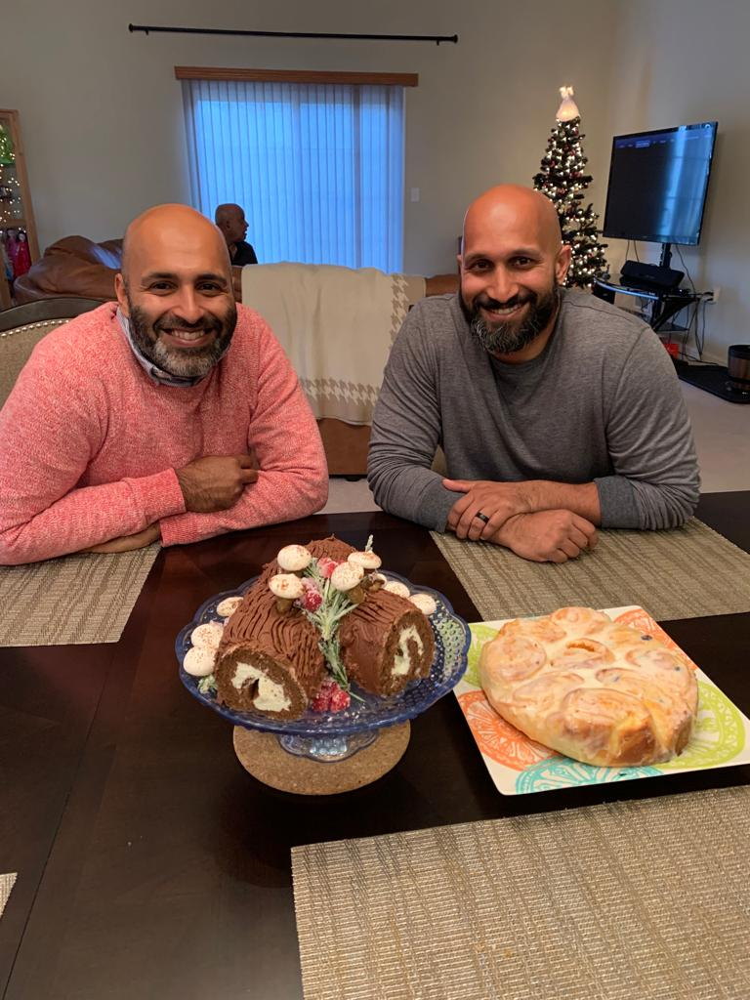

Carrot Halwa Rolls

Rahul and his Yule Log Roll(Left) and Me and my Carrot Halwa Roll (right)
Ingredients
Rolls
- 3/4 cup warm milk
- 2 1/4 tsp active yeast
- 1/4 cup granulated sugar
- 1 egg plus 1 yolk
- 1/4 cup salted butter
- 3 cups bread flour (plus more for dusting)
- 3/4 tsp salt
Carrot Halwa
- 18 oz of grated carrots
- 1/2 cup plus 2 tbsp condensed milk
- 1/4 tsp cardamom powder
- 1 1/2 tbsp ghee
- 2 tbsp raisins optional
Rose-Cardamom Glaze
- 2 cups powdered sugar
- 2 tbsp melted butter (unsalted)
- 1/4 cup granulated sugar
- 4 tbsp milk
- 1 tsp rose water (add more for taste if needed)
- 1/2 tsp cardamom optional
Steps
- Activate the yeast by sprinkling it on top of the 3/4 cup of warm milk. Add sugar if needed
- Once the yeast is bubbling; add the sugar, egg, egg yolk and melted butter
- Mix in the 3 cups of bread flour and 3/4 tsp of salt
- Once the bread flour is mixed in to a dough consistency, transfer to a lightly floured surface and knead by hand for 8-10 minutes. If using a stand mixer, knead for 3 to 4 minutes
- Transfer dough to a well oiled bowl and cover with plastic wrap and cover with a towel. Proof for an hour to an hour and a half or until doubled in size
- While dough is proofing, heat 1/2 tbsp of ghee in a pan on medium heat
- Add 2 tbsp of raisins to the pan and remove when plump
- Add grated carrots and saute for 2 to 3 minutes
- Add all the condensed milk and mix well. Continue until carrots have released moisture
- Lower heat to medium-low and cover. Let simmer and cook until carrots become soft and tender
- Add cardamom powder and rest of ghee to enhance aroma
- Store in a bowl, uncovered, and chill for an hour or until slightly cool
- Preheat oven to 350 degrees F
- After dough has risen and halwa is chilled, flour rolling pin and light flour enough surface to rollout dough into a 10'' by 8'' rectangle
- Spread halwa in a thin layer across the rectangle of dough, sprinkle raisins and roll tightly into a 10'' roll
- Cut 1 inch from both ends and discard and then cut the rest of the roll into 2 inch rolls
- Place rolls in pan lined with parchment paper spraying paarchment paper with non-stick spray is optional
- Bake rolls for 20-25 minutes or until slightly golden brown around the edges
- While rolls are baking, make glaze by combining glaze ingredients in bowl and mixing well
- After rolls have been removed from oven, let sit for 5-10 minutes and then spread glaze
- Enjoy rolls while still warm!